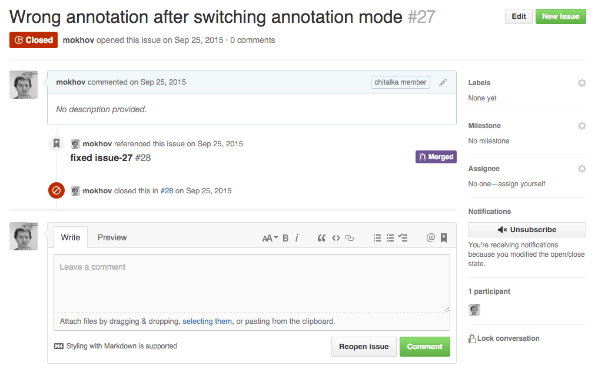

Github и основы командной разработки
Мохов Олег
Разработчик интерфейсов
github-flow
- Содержимое ветки «master» всегда работоспособно
- Начиная работу – делаем ветку от «master»
- Закоммитив часть работы её нужно отправить на удалённый сервер (push)
- Когда работа закончена – отправляется Pull Request в «master»
- После одобрения Pull Request он вливается в «master»
- Продакшн! PROFIT!
GitHub Flow
Создание ветки из мастера
> git checkout -b my-new-branch
> git checkout -b personal-account-page
> git checkout -b issue-78-personal-account-page
Пулл из апстрима
> git remote -v
origin https://github.com/Lucifer-is-my-pet/verstka-tasks-2.git
> git remote add upstream https://github.com/urfu-2015/javascript-tasks-3.git
> git remote -v
origin https://github.com/Lucifer-is-my-pet/verstka-tasks-2.git
upstream https://github.com/urfu-2015/javascript-tasks-3.git
> git pull --rebase upstream master
Pull Request
- В названии PR хорошо бы сослаться на решенную задачу
- Политка «двух ОК»: пока два человека из команды не отсмотрят PR – его вливать нельзя
- Автоматизация назначения Review'ов, пример, https://github.com/facebook/mention-bot
Зачем нужно CodeReview?
- улучшение качества кода
- оптимизация алгоритмов и архитектуры
Зачем нужно CodeReview?
- улучшение качества кода
- поиск багов
- оптимизация алгоритмов и архитектуры
- консистентность
- распостранение знаний о проекте
- прокачивание скиллов
Для чего не нужно CodeReview?
- code style
- jshint
- jscs
- css lint
- git hooks
- и всё что возможно автоматизировать
Что ещё стоит знать?
- CodeReview – это коллективная ответственность за код: если ошибка попала в продакшн, значит её пропустили все
- CodeStyle правки не обсуждаются в PR, а должны проверяться роботами!
- Для новеньких в команде это хорошая возможность как быстро приспособиться, так и смотреть на чужой код (вспомним первые задания ;)
- Staging-сервера с работающей копией кода PR – это тоже часть CodeReview
- PullRequest – это один из способов CodeReview. Возможно делать его очно при обсуждении, возле доски и т.п
rebase
> git pull --rebase upstream master
> git rebase -i HEAD~20
pick c4f8ade Добавлена задача к первой лекции: HTML, I часть
pick a9d3cb2 Основное сделано осталось навести красоту
pick 529ff45 Кажись, всё
pick 38dd958 Больше ссылочек, вынесен style
pick c5253a6 незакрытый тег, ай-яй-яй
pick 907ac8d по codestyle
pick 9743e29 по codestyle[2]
pick 00e997b по codestyle[3]
pick 5722e34 по codestyle[4]
pick 312507b Пофиксено[2] OpenGraph, br'ы, hr'ы, почта, стили
pick 02848dd по codestyle[4.1]
pick f2ce4e3 по codestyle[5]
pick 6644af5 по codestyle[5.1]
pick 2d744f0 по codestyle[5.2]
pick 7e73987 Пофиксено
pick 251cea9 Пофиксено[1.1]
pick 199eda1 Пофиксено[2]
pick ea42d38 Пофиксено[2.1]
pick 9297b84 Пофиксено[2.2]
pick 159b337 Пофиксено[2.3]
pick 02d3688 Пофиксено[2.4]
pick f47b774 Пофиксено[2.5]
pick 363c23c Пофиксено[2.6]
> git push -f origin task-3
Заголовок
- Поменять favicon
- Обновление страницы
- Обновление страницы «Контакты»
- Поменять favicon на странице «Контакты»
- Рефакторинг
Хорошая задача
- Чётко сформулирована
- Отвечает на вопрос: «Что должно получиться в итоге?»
- Имеет измеримые сроки выполнения
- Реализуема в принципе
Плохая задача
- Сформулирована туманно
- Не отвечает на вопрос: «Что должно получиться в итоге?»
- Не имеет измеримых сроков выполнения
- Не реализуема в принципе
Плохая задача
- Сформулирована туманно
- Не отвечает на вопрос: «Что должно получиться в итоге?»
- Не имеет измеримых сроков выполнения
- Не реализуема в принципе
- Можно декомпозировать
Issues
- # – для того чтобы сослаться на задачу
- 
Issues
- # – для того чтобы сослаться на задачу
- @ – для того чтобы сослаться на юзера
- Markdown разметка